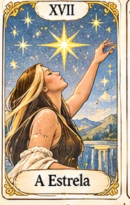

✧ UM ENCONTRO COM O SIMBÓLICO ✧
As cartas revelam caminhos.
Você faz suas escolhas.
Um espaço de autoconhecimento, sensibilidade e novas perspectivas. Faça uma tiragem ou percorra os 22 Arcanos Maiores ilustrados com a identidade do Tarot da Marjo.
✦ EDIÇÃO SOLAR · 22 ARCANOS ✦

01 / SUA EXPERIÊNCIA
O ritual das cartas
Escolha uma intenção, embaralhe e descubra uma mensagem para refletir.
22 CARTAS · 1 BARALHO
FORMATO DA TIRAGEM
O tarô aqui é um convite ao autoconhecimento, não uma previsão factual ou aconselhamento profissional.
Sua história, suas perguntas.
Escolha o formato da tiragem para começar.
02 / A COLEÇÃO
Os 22 Arcanos Maiores
Cada imagem carrega símbolos que abrem espaço para novas interpretações. Toque em uma carta para conhecê-la.
0 — XXI
22 cartas
03 / TAROT DA MARJOUm olhar sensível sobre
Um olhar sensível sobre
o seu caminho.
O tarô é uma linguagem de imagens, arquétipos e possibilidades. O que surge na tiragem não determina o futuro: pode ajudar a formular perguntas melhores sobre o presente.
Falar com a Marjo ↗